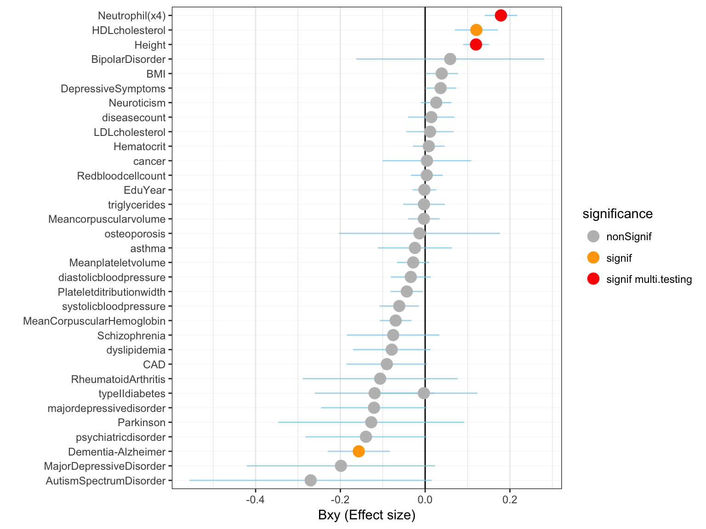

This document applies the gsmr tool to our data: is vitamin-D causal to other traits and diseases?
To run a GSMR analysis we need:
# I download the vitamin-D summary statistics from here: https://drive.google.com/drive/folders/0BzYDtCo_doHJRFRKR0ltZHZWZjQ
# Then from local download folder to delta
gzip upload_25HydroxyVitaminD_QC.METAANALYSIS1.txt
scp upload_25HydroxyVitaminD_QC.METAANALYSIS1.txt.gz y.holtz@delta.imb.uq.edu.au:/home/y.holtz/VITAMIND_XIA_ET_AL/1_GWAS
# good to delta folder
cd /home/y.holtz/VITAMIND_XIA_ET_AL/1_GWAS
# I miss the frequence of the major allele in this file. I can use the hapmap3 frequencies previously calculated
cat /home/y.holtz/BLOOD_GWAS/1_GWAS/PLINK/all_frequency_1.frq
# --- MA FORMAT --- make the file with this new column, transform it in a format suitable for GSMR.
echo "SNP A1 A2 freq b se p n" > GWAS_vitaminD_XiaEtAL.ma
join <(zcat upload_25HydroxyVitaminD_QC.METAANALYSIS1.txt.gz | sort -k 1,1) <(awk '{print $2, $6}' /home/y.holtz/BLOOD_GWAS/1_GWAS/PLINK/all_frequency*.frq | sort -k 1,1) | awk '{ print $1,$2,$3,$15,$4,$5,$6,$14}' >> GWAS_vitaminD_XiaEtAL.ma
# --- LINEAR FORMAT --- make a .linear format suitable for PLINK or FUMA
echo "CHR SNP BP A1 TEST NMISS BETA STAT P" > GWAS_vitaminD_XiaEtAL.linear
zcat upload_25HydroxyVitaminD_QC.METAANALYSIS1.txt.gz | grep -v 'Chr' | awk '{ print $12, $1, $13, $2, "ADD", $14, $4, $4*$5, $6}' >> GWAS_vitaminD_XiaEtAL.linear
R # We need to remove the 10^5 format for 100000 format
data=read.table("GWAS_vitaminD_XiaEtAL.linear", header=T)
data$BP = round(data$BP, 0)
options(scipen=500)
library(dplyr)
data <- data %>% arrange(CHR, BP)
write.table(data, file="GWAS_vitaminD_XiaEtAL.linear", quote=F, row.names=FALSE )
# --- LIGHT FORMAT --- make a light version for github
cat GWAS_vitaminD_XiaEtAL.linear | head -1 > GWAS_vitaminD_XiaEtAL.linear.light
cat GWAS_vitaminD_XiaEtAL.linear | awk '{if( $9 < 0.1){print $0}}' >> GWAS_vitaminD_XiaEtAL.linear.light
gzip GWAS_vitaminD_XiaEtAL.linear.light
# Transfer locally?
cd ~/Dropbox/QBI/4_UK_BIOBANK_GWAS_PROJECT/VitaminD-GWAS/0_DATA
scp y.holtz@delta.imb.uq.edu.au:/home/y.holtz/VITAMIND_XIA_ET_AL/1_GWAS/GWAS_vitaminD_XiaEtAL.linear.gz .
# Note: I need to delete 2 SNPs that have a P of 0 in the R output. Because R rounds them to 0
more GWAS_vitaminD_XiaEtAL.linear | awk '{ if($9!=0){print $0}}' | gzip > GWAS_vitaminD_XiaEtAL.linear_IGV.gzGWAS summary statistics for diseases we want to explain. I’m gonna consider several sources of information:
23 diseases comming from a meta-analysis of the UKBiobank and the GERA consortium. Available online here. Diseases available are: allergic rhinitis, asthma, cancer ,card depress, dermatophytosis, dia2, dyslipid, hemorrhoids, hernia_abdominopelvic, hyper, insomnia, iron deficiency, irritable bowel, macdegen, ostioa, ostiop, peptic_ulcers, psychiatric, pvd stress, sum diseases, varicose veins). File available here on Inode: ibscratch/users/uqzzhu1/dataset/formatted_meta/combined_ukb_gera*
66 other diseases provided by different publications. These include Alzheimer, depression, neuroticsm, Schizophrenia, Type II Diabete and others. File available here: ibscratch/users/uqzzhu1/dataset/formatted_meta/
24 diseases from a GWAS on UKBiobank. Provided by Angli and Zhihong Zhu. On Delta here: /gpfs/gpfs01/polaris/Q0286/uqzzhu1/ukb_summary
GWAS sumstat from Neales Lab?
We set 2 lists of outcomes. A first list with high prior. A second with all the diseases we can find. List decided by John mainly. Here is the detail of these list.
The first step is to get the last GCTA version that support GSMR. Available on the QBI cluster in Zhihong folder (thanks!)
# First transfert localy
cd /Users/y.holtz/Desktop
scp uqyholtz@inode.qbi.uq.edu.au:/ibscratch/users/uqzzhu1/code_project/gcta/build/gcta64 .
# Then from locally to delta
cd /Users/y.holtz/Desktop
scp gcta64 y.holtz@delta.imb.uq.edu.au://home/y.holtz/binThen I have to prepare a couple of files and run the analysis
# Specific repo
cd /home/y.holtz/VITAMIND_XIA_ET_AL/3_GSMR
# Prepare a file that gives the location of every bfile (one per chromosome)
ls /gpfs/gpfs01/polaris/Q0286/UKBiobank/v2EURu_HM3/ukbEURu_imp_chr*_v2_HM3_QC.bed | sed 's/.bed//' > gsmr_ref_data.txt
# prepare a file that gives the link to the GWAS result for the risk factor
echo "vitaminD /home/y.holtz/VITAMIND_XIA_ET_AL/1_GWAS/GWAS_vitaminD_XiaEtAL.ma" > gsmr_exposure.txt
# prepare ONE file that list all the outcomes:
for i in $(ls /shares/compbio/Group-Wray/YanHoltz/GWAS_SUMSTAT/combined*) ; do a=$(echo $i | sed 's/.*gera_//' | sed 's/_1000g.*//') ; echo $a $i ; done > gsmr_outcome.txt
for i in $(ls /shares/compbio/Group-Wray/YanHoltz/GWAS_SUMSTAT/*txt | grep -v "combined") ; do a=$(echo $i | sed 's/.*SUMSTAT\///' | sed 's/.txt//' ) ; echo $a $i ; done >> gsmr_outcome.txt
# Split this file: one file per outcome:
split -l 1 --numeric-suffixes gsmr_outcome.txt
for i in x* ; do a=$(echo $i | sed 's/x0/x/') ; mv $i $a ; done
# send an array of GSMR
tmp_command="gcta64 --mbfile gsmr_ref_data.txt --gsmr-file gsmr_exposure.txt x{TASK_ID} --gsmr-alg 0 --out gsmr_result_vitaminDXiaEtAl_{TASK_ID}"
qsubshcom "$tmp_command" 1 30G GSMR_array 10:00:00 "-array=1-88"
# Once it's over, concatenate the results in a unique file
cat gsmr_result_vitaminDXiaEtAl_*gsmr | head -1 > gsmr_result_vitaminDXiaEtAl.gsmr
cat gsmr_result_vitaminDXiaEtAl_*gsmr | grep -v "Exposure" >> gsmr_result_vitaminDXiaEtAl.gsmrFirst I transfer the results locally for further analysis.
# Then from locally to delta
cd /Users/y.holtz/Dropbox/QBI/4_UK_BIOBANK_GWAS_PROJECT/VitaminD-GWAS/0_DATA
scp y.holtz@delta.imb.uq.edu.au:/home/y.holtz/VITAMIND_XIA_ET_AL/3_GSMR/gsmr_result_vitaminDXiaEtAl.gsmr .Here is how the result of GSMR looks like:
# Read gsmr result
gsmr=read.table("0_DATA/gsmr_result_vitaminDXiaEtAl.gsmr", header = T)
# Read the meaning of files:
meaning=read.table("0_DATA/list_diseases_GWAS_sumstat.csv", header=T, sep=",")
# Add the meaning to gsmr result
gsmr <- gsmr %>% left_join(., meaning, by=c("Outcome"="code") )
# Compute the p-value significancy threshold taking into account multiple testing.
thres <- 0.05 / nrow(gsmr)And here is a description of the effect sizes (bxy): the effect of the risk factor on the disease. A few observation:
gsmr %>%
arrange(bxy) %>%
filter(!is.na(bxy) ) %>%
mutate(name=factor(name, name)) %>%
mutate(significance=ifelse(p<thres, "signif", "nonSignif")) %>%
ggplot( aes(x=name, y=bxy)) +
geom_hline( yintercept=0 ) +
geom_segment( aes(x=name, xend=name, y=bxy-se, yend=bxy+se), color="skyblue", alpha=0.7) +
geom_point(aes(color=significance), size=4) +
scale_color_manual( values=c("grey", "orange")) +
coord_flip() +
theme_bw() +
theme( panel.grid.major.y = element_line(size=0.1)) +
ylab("Bxy (Effect size)") +
xlab("")Figure: effect size (Bxy) of Vitamin D on 84 traits. Grey / orange points show significance with a treshold of 0.05 for the p-value. Blue lines show the standard error around the effect size.
The 85 GSMR test results are displayed in this table in case you need to check a specific value:
datatable(gsmr %>% arrange(p), rownames = FALSE, options = list(pageLength = 15) )Here is an ordered barplot of the pvalues. We have several traits over the 0.05 threshold of significance. But this does not account for multiple testing.
gsmr %>%
arrange(desc(p)) %>%
filter( !is.na(bxy)) %>%
mutate(name=factor(name, name)) %>%
mutate(significance=ifelse(p<thres, "signif", "nonSignif")) %>%
ggplot( aes(x=name, y=-log10(p))) +
geom_segment( aes(x=name, xend=name, y=-log10(p), yend=0), color="skyblue", alpha=0.7) +
geom_point(aes(color=significance), size=4) +
scale_color_manual( values=c("grey", "orange")) +
coord_flip() +
theme_light() +
theme( panel.grid.major.y = element_blank()) +
ylab("-log10( pvalue )") +
xlab("") 
A work by Yan Holtz
Yan.holtz.data@gmail.com